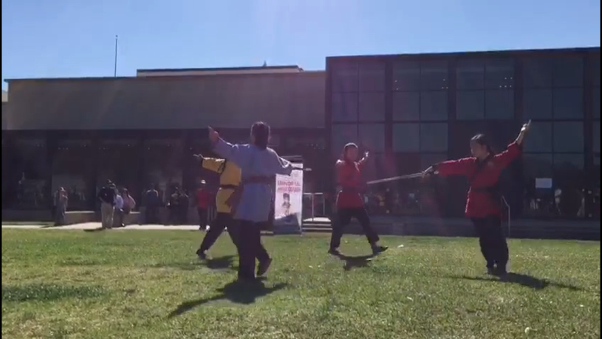

I have practiced Shaolin kungfu for almost 8 years now. I have learned self discipline and has gotten better at my physical and coordination skills. I have performed multiple times and now part of the performance team for places like Huntington Library Chinese new year festival, Alhambra chinese new year festival, Pasadena Asian Pacific museum chinese new year, regular school performing for chinese new year, and the martial arts center events. I also has gotten an opportunity to help teach younger levels. I have learned many hand and weapon forms like straight sword, broad sword, long broad sword, staff, spear, and double broad sword.
I am in the school orchestra for 3 years now. I have been playing viola for 5 years, guitar for about 8 years, and learned piano for 2 years when i was younger. I like learning songs on guitar and keyboard on my own and like to play those in my spare time. My friends from a summer band class and I created a band called the Acoustic Potatoes that lasted for about a year in 8th grade and I played guitar. I also was in a summer jazz camp playing guitar.
I have been in speech and debate for 2.5 years. I have gone to many competitions. I won 3rd in informative speech and original narrative. I got finalist in impromptu speech and non-fiction writing. I won first in Public forum debate(partner debate). I have also particpated in Spontaneous(SPAR) debate and Oratorical Interpretation(Declamation) speech. Besides learning just regular speech and debate, I have learned more about current issues and life communication skills. I also have judged at two elementary competitions for Poetry, Spar and Duo Interp.